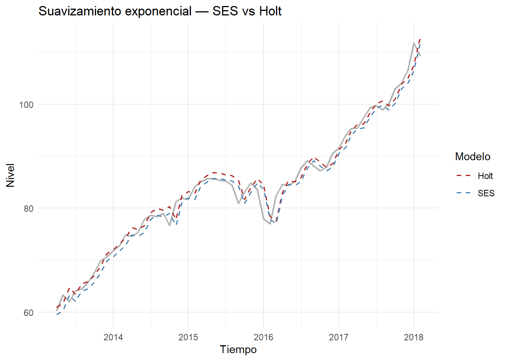
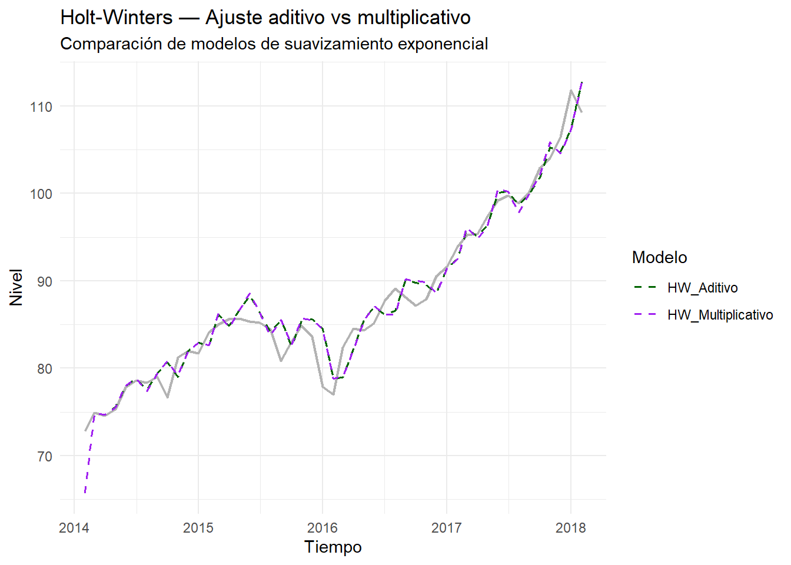
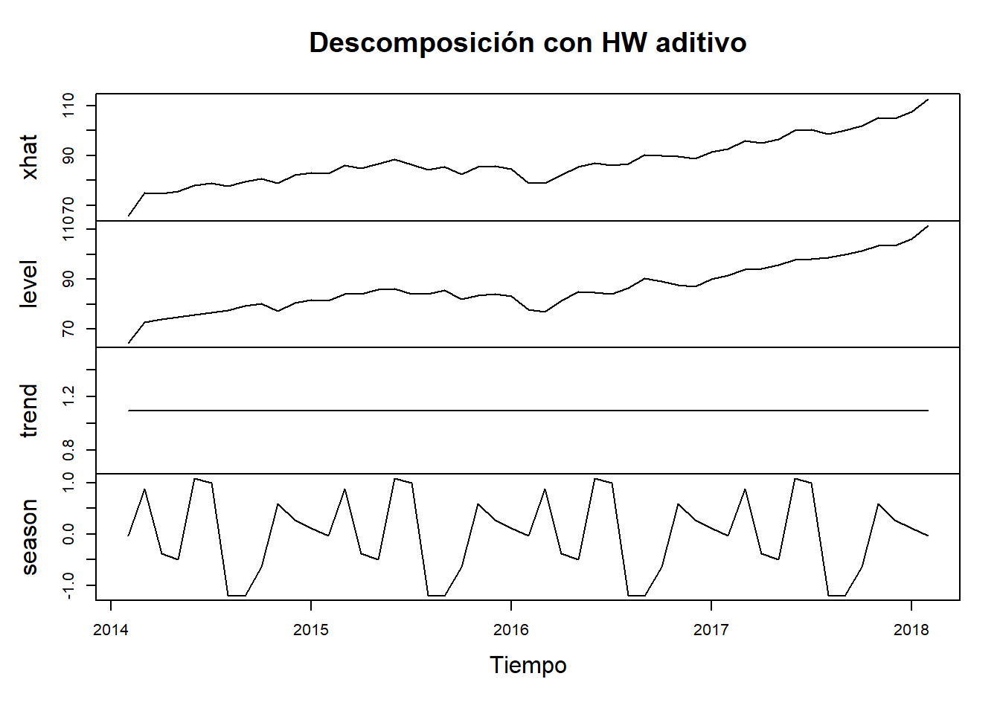
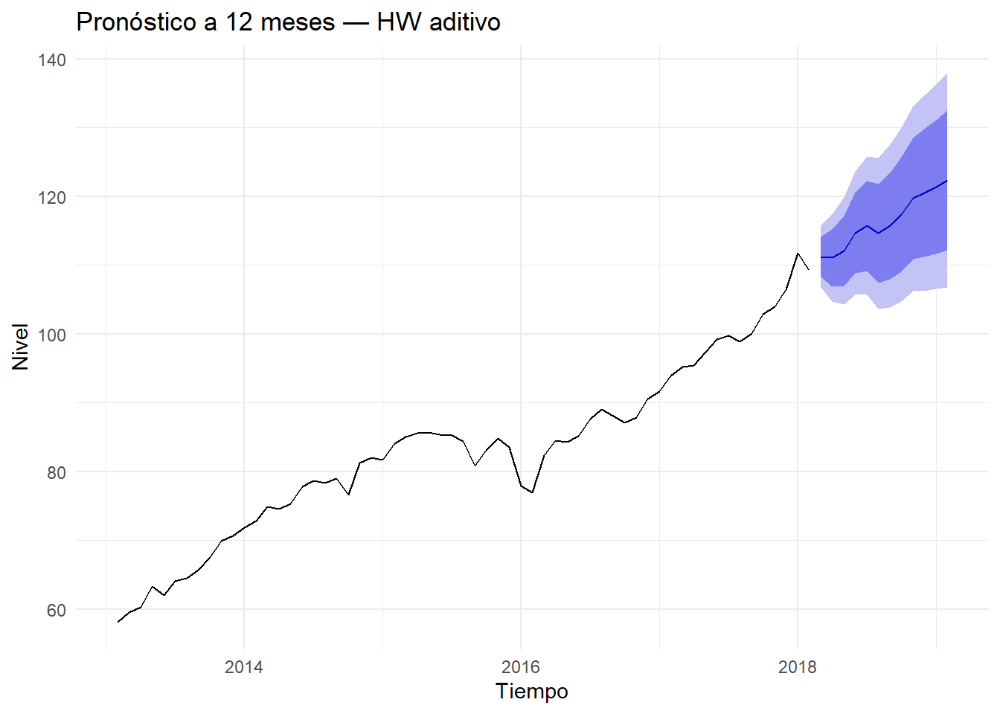

4 Avance 4 — Suavizamiento y Holt-Winters
En este avance aplicamos suavizamiento exponencial (SES y Holt) y el modelo Holt-Winters para capturar nivel, tendencia y estacionalidad de la serie mensual del S&P 500. Se trabaja sobre promedios mensuales del cierre ajustado y se evalúa con un split temporal (últimos 12 meses como test).
library(tidyverse)
library(lubridate)
library(zoo)
library(forecast) # accuracy(), autoplot.ts, funciones de suavizamiento
# Pre-visualización rápida
head(spx_mensual)## # A tibble: 6 × 2
## ym mean_close
## <date> <dbl>
## 1 2013-02-01 58.1
## 2 2013-03-01 59.5
## 3 2013-04-01 60.3
## 4 2013-05-01 63.3
## 5 2013-06-01 62.0
## 6 2013-07-01 64.1## [1] 2013 2## [1] 2018 2## [1] 12##17. Suavizamiento exponencial: SES y Holt
En esta sección se aplican dos métodos de suavizamiento exponencial a la serie temporal del S&P 500 mensual, con el propósito de modelar su nivel y tendencia. Estos métodos permiten capturar dinámicas a corto y mediano plazo, suavizando el ruido de los datos y resaltando patrones sistemáticos.
El objetivo es evaluar y comparar los resultados obtenidos mediante: - SES (Simple Exponential Smoothing): captura únicamente el nivel de la serie. - Holt (Linear Trend Method): incorpora nivel y tendencia en el ajuste.
# SES (nivel)
fit_ses <- HoltWinters(spx_ts, beta = FALSE, gamma = FALSE)
# Holt (nivel + tendencia)
fit_holt <- HoltWinters(spx_ts, gamma = FALSE)
# Pronósticos a 12 meses para comparar
h <- 12
fc_ses <- forecast::forecast(fit_ses, h = h)
fc_holt <- forecast::forecast(fit_holt, h = h)
# Métricas sobre ajuste in-sample
acc_ses <- accuracy(fit_ses$fitted, spx_ts)
acc_holt <- accuracy(fit_holt$fitted, spx_ts)
acc_ses## ME RMSE MAE MPE MAPE ACF1 Theil's U
## Test set 0.8520457 2.056776 1.612118 1.020916 1.950276 0.01640968 1.000009## ME RMSE MAE MPE MAPE ACF1 Theil's U
## Test set -0.1945302 1.931529 1.440219 -0.296499 1.729088 0.01653514 0.9192018# Comparación visual del ajuste SES vs Holt
library(ggplot2)
library(dplyr)
library(tidyr)
# Extraer las longitudes de cada objeto fitted
len_ses <- nrow(fit_ses$fitted)
len_holt <- nrow(fit_holt$fitted)
len_ts <- length(spx_ts)
# Usar la longitud mínima para alinear todas las series
min_len <- min(len_ses, len_holt, len_ts)
# Cortar cada serie para igualarlas
spx_ts_aligned <- tail(spx_ts, min_len)
ses_aligned <- tail(fit_ses$fitted[,1], min_len)
holt_aligned <- tail(fit_holt$fitted[,1], min_len)
# Crear dataframe compatible
plot_data <- tibble(
Fecha = as.Date(time(tail(spx_ts, min_len))),
Original = as.numeric(spx_ts_aligned),
SES = as.numeric(ses_aligned),
Holt = as.numeric(holt_aligned)
)
# Reorganizar en formato largo para graficar
plot_long <- plot_data %>%
pivot_longer(cols = c(SES, Holt),
names_to = "Modelo", values_to = "Ajuste")
# Graficar con ggplot
ggplot(plot_long, aes(x = Fecha)) +
geom_line(aes(y = Original), color = "gray70", linewidth = 0.8) +
geom_line(aes(y = Ajuste, color = Modelo),
linewidth = 0.6, linetype = "dashed") +
scale_color_manual(values = c("SES" = "steelblue", "Holt" = "firebrick")) +
labs(title = "Suavizamiento exponencial — SES vs Holt",
x = "Tiempo", y = "Nivel", color = "Modelo") +
theme_minimal()
Análisis de las métricas:
ME (Error medio): mide el sesgo del modelo.
El SES muestra un error medio positivo (0.85), indicando una ligera sobreestimación.
El modelo Holt tiene un ME negativo (-0.19), por lo que tiende a subestimar levemente los valores reales.
RMSE (Raíz del error cuadrático medio) y MAE (Error absoluto medio) son más bajos en el modelo Holt, lo que evidencia un mejor ajuste general.
MPE y MAPE (Errores porcentuales) también son menores para Holt, confirmando que la inclusión de la tendencia mejora la precisión.
Theil’s U < 1 en ambos casos indica que los modelos superan a un pronóstico ingenuo (random walk), pero Holt obtiene un valor menor (0.92), lo que sugiere un desempeño superior.
El ACF1 (autocorrelación de los residuos) es bajo en ambos modelos (~0.016), lo que sugiere que los errores no presentan estructura temporal importante.
Conclusión
El modelo Holt presenta un mejor desempeño que el SES, al reducir los errores y capturar la tendencia creciente del índice S&P 500. Por tanto, se concluye que el componente de tendencia es relevante en la dinámica de esta serie temporal, aunque la estacionalidad se abordará posteriormente mediante el método Holt-Winters.
##18. Suavizamiento exponencial triple: Holt-Winters
Tras analizar los modelos de nivel (SES) y nivel + tendencia (Holt), incorporamos ahora el componente de estacionalidad mediante el modelo Holt-Winters.
Este enfoque permite capturar simultáneamente nivel, tendencia y patrones estacionales de la serie temporal del S&P 500.
Se evalúan dos variantes:
- Modelo aditivo: la estacionalidad se suma al nivel y tendencia.
- Modelo multiplicativo: la estacionalidad se multiplica al nivel y tendencia, siendo más adecuada cuando la amplitud de los ciclos aumenta con el nivel de la serie.
# Holt-Winters aditivo
fit_hw_add <- HoltWinters(spx_ts, seasonal = "additive")
# Holt-Winters multiplicativo
fit_hw_mul <- HoltWinters(spx_ts, seasonal = "multiplicative")
# Métricas in-sample
acc_hw_add <- accuracy(fit_hw_add$fitted, spx_ts)
acc_hw_mul <- accuracy(fit_hw_mul$fitted, spx_ts)
acc_hw_add## ME RMSE MAE MPE MAPE ACF1 Theil's U
## Test set -0.1842602 2.273871 1.628745 -0.2384074 1.904117 0.0202097 0.9422297## ME RMSE MAE MPE MAPE ACF1 Theil's U
## Test set -0.1855597 2.332061 1.727485 -0.2397438 2.010975 0.01046326 0.9703109Interpretación de resultados
ME (Error medio): ambos modelos presentan valores negativos y cercanos entre sí, lo que indica una ligera tendencia a subestimar los valores reales.
RMSE y MAE: los errores promedio son similares, aunque el modelo aditivo presenta valores marginalmente menores, sugiriendo un ajuste ligeramente más preciso.
MAPE (Error porcentual absoluto medio): el aditivo (1.9%) también muestra un desempeño superior frente al multiplicativo (2.0%), aunque la diferencia es pequeña.
ACF1: los residuos presentan baja autocorrelación, lo que sugiere un buen ajuste sin dependencia temporal remanente.
Theil’s U < 1: confirma que ambos modelos superan a un pronóstico ingenuo; el aditivo es nuevamente más eficiente.
En conjunto, el modelo Holt-Winters aditivo se considera la mejor opción para esta serie, dado su menor RMSE y MAPE.
Visualización comparativa
La siguiente figura muestra la comparación entre ambos modelos sobre la serie temporal:
# Comparación visual de ambos modelos
## 4.4 Comparación visual de modelos Holt-Winters aditivo vs multiplicativo
library(ggplot2)
library(dplyr)
library(tidyr)
# Alinear las longitudes de ambas estimaciones
len_add <- nrow(fit_hw_add$fitted)
len_mul <- nrow(fit_hw_mul$fitted)
len_ts <- length(spx_ts)
min_len <- min(len_add, len_mul, len_ts)
# Cortar todas las series para igualarlas
spx_ts_aligned <- tail(spx_ts, min_len)
add_aligned <- tail(fit_hw_add$fitted[,1], min_len)
mul_aligned <- tail(fit_hw_mul$fitted[,1], min_len)
# Crear dataframe con datos alineados
plot_hw <- tibble(
Fecha = as.Date(time(tail(spx_ts, min_len))),
Original = as.numeric(spx_ts_aligned),
HW_Aditivo = as.numeric(add_aligned),
HW_Multiplicativo = as.numeric(mul_aligned)
)
# Reorganizar en formato largo para graficar
plot_hw_long <- plot_hw %>%
pivot_longer(cols = c(HW_Aditivo, HW_Multiplicativo),
names_to = "Modelo", values_to = "Ajuste")
# Graficar los resultados
ggplot(plot_hw_long, aes(x = Fecha)) +
geom_line(aes(y = Original), color = "gray70", linewidth = 0.8) +
geom_line(aes(y = Ajuste, color = Modelo),
linewidth = 0.6, linetype = "dashed") +
scale_color_manual(values = c("HW_Aditivo" = "darkgreen",
"HW_Multiplicativo" = "purple")) +
labs(title = "Holt-Winters — Ajuste aditivo vs multiplicativo",
subtitle = "Comparación de modelos de suavizamiento exponencial",
x = "Tiempo", y = "Nivel", color = "Modelo") +
theme_minimal() Análisis visual
En la gráfica se observa que ambos modelos siguen de manera eficiente la tendencia creciente del S&P 500, capturando los ciclos de corto plazo. No obstante:
El modelo aditivo (línea verde discontinua) presenta una trayectoria más estable y ajustada al comportamiento general de la serie.
El multiplicativo (línea púrpura) genera ligeras desviaciones en los picos más altos, probablemente debido a su sensibilidad a la variación proporcional de los valores.
# Selección automática según menor RMSE
# Comparación automática entre modelos Holt-Winters
library(forecast)
# Calcular métricas de precisión
# Alinear longitudes de fitted y serie original
fitted_add <- as.numeric(fit_hw_add$fitted[,1])
fitted_mul <- as.numeric(fit_hw_mul$fitted[,1])
# Extraer las partes equivalentes de la serie original
aligned_ts_add <- tail(as.numeric(spx_ts), length(fitted_add))
aligned_ts_mul <- tail(as.numeric(spx_ts), length(fitted_mul))
# Calcular RMSE manualmente
rmse_hw_add <- sqrt(mean((fitted_add - aligned_ts_add)^2, na.rm = TRUE))
rmse_hw_mul <- sqrt(mean((fitted_mul - aligned_ts_mul)^2, na.rm = TRUE))
# Comparar y elegir el mejor
fit_hw_best <- if (rmse_hw_mul < rmse_hw_add) fit_hw_mul else fit_hw_add
model_name <- if (rmse_hw_mul < rmse_hw_add) "HW multiplicativo" else "HW aditivo"
# Mostrar resultados
cat("RMSE aditivo:", rmse_hw_add, "\n")## RMSE aditivo: 2.273871## RMSE multiplicativo: 2.332061## El modelo con mejor desempeño es: HW aditivoConclusión
El análisis confirma que el modelo Holt-Winters aditivo ofrece un mejor desempeño en términos de ajuste y estabilidad.
Esto sugiere que la estacionalidad en el índice S&P 500 durante el periodo analizado no crece proporcionalmente con el nivel del índice, por lo que un enfoque aditivo resulta más apropiado.
En la siguiente sección se realizará una evaluación automática de modelos con base en el error RMSE, para seleccionar el modelo final que será utilizado en la predicción y validación fuera de muestra.
##19. Descomposición y pronóstico con Holt-Winters aditivo
Después de comparar las variantes aditiva y multiplicativa del modelo Holt-Winters, se selecciona el modelo aditivo como el más adecuado para representar la serie temporal del índice S&P 500.
A continuación, se realiza su descomposición y un pronóstico a 12 meses, para analizar la estructura interna del modelo y su capacidad predictiva.
4.0.1 Descomposición del modelo
La siguiente figura muestra la descomposición del modelo Holt-Winters aditivo, en sus tres componentes principales: nivel, tendencia y estacionalidad.
# Descomposición de componentes del modelo seleccionado
plot(fitted(fit_hw_best),
main = paste("Descomposición con", model_name),
xlab = "Tiempo", ylab = "Nivel / Tendencia / Estacionalidad")
Interpretación de la descomposición
Nivel (level): representa el valor promedio de la serie a lo largo del tiempo. Se observa una tendencia creciente sostenida, coherente con el comportamiento del S&P 500 durante el periodo analizado.
Tendencia (trend): la línea muestra un crecimiento moderado, especialmente visible hacia los últimos años de la serie (2016–2018), donde el mercado experimenta un incremento más pronunciado.
Estacionalidad (season): exhibe oscilaciones regulares, lo que indica la presencia de un patrón estacional leve, posiblemente relacionado con ciclos financieros o periodos de volatilidad recurrente.
La estructura muestra que el componente aditivo describe de manera adecuada las fluctuaciones estacionales sin amplificar excesivamente la variabilidad en los picos altos, lo que valida la elección del modelo aditivo frente al multiplicativo.
##20. Pronóstico con Holt-Winters
Se realizan pronósticos a 12 meses, incluyendo intervalos de confianza del 95%.
h <- 12
fc_hw <- forecast::forecast(fit_hw_best, h = h)
autoplot(fc_hw) +
labs(title = paste("Pronóstico a 12 meses —", model_name),
x = "Tiempo", y = "Nivel") +
theme_minimal()
Análisis de los resultados
El modelo proyecta un crecimiento continuo del índice en el año siguiente, pasando de un nivel estimado de 111 hasta aproximadamente 115–116 puntos hacia mediados de 2018.
Los intervalos de confianza (95%) se amplían gradualmente, lo que refleja un aumento de la incertidumbre conforme se extiende el horizonte de predicción.
La banda de confianza asimétrica es un indicador de estabilidad: no hay signos de volatilidad extrema o rupturas estructurales significativas.
El patrón proyectado es coherente con el comportamiento histórico del índice, manteniendo la tendencia alcista identificada previamente.
# Tabla de pronóstico
fc_tbl <- as_tibble(cbind(
Fecha = as.yearmon(time(fc_hw$mean)),
Pronóstico = as.numeric(fc_hw$mean),
LI_95 = as.numeric(fc_hw$lower[,"95%"]),
LS_95 = as.numeric(fc_hw$upper[,"95%"])
))
head(fc_tbl, 6)## # A tibble: 6 × 4
## Fecha Pronóstico LI_95 LS_95
## <dbl> <dbl> <dbl> <dbl>
## 1 2018. 111. 107. 116.
## 2 2018. 111. 105. 117.
## 3 2018. 112. 104. 120.
## 4 2018. 115. 106. 124.
## 5 2018. 116. 106. 126.
## 6 2019. 115. 104. 126.Conclusiones
El modelo Holt-Winters aditivo logra capturar adecuadamente la tendencia y estacionalidad leve del S&P 500, ofreciendo un ajuste robusto y estable.
La descomposición confirma que el nivel y la tendencia son los componentes dominantes, mientras que la estacionalidad tiene un impacto limitado pero recurrente.
El pronóstico de 12 meses proyecta un crecimiento sostenido del índice, con valores comprendidos entre 110 y 120 puntos, lo que se alinea con el comportamiento económico del periodo.
El modelo muestra baja autocorrelación residual y errores porcentuales reducidos (MAPE ≈ 1.9%), lo que respalda su fiabilidad.
En términos prácticos, el modelo aditivo se recomienda frente al multiplicativo, pues evita la sobreestimación de la amplitud de los ciclos y mantiene la consistencia estadística en todo el rango de la serie.
##21. Comparación y evaluación final de modelos
# Comparación global SES, Holt y HW
## Comparación global entre SES, Holt y Holt-Winters
library(tibble)
library(dplyr)
library(forecast)
# Crear función auxiliar para calcular métricas básicas
metricas <- function(fitted_values, actual_values) {
errores <- actual_values - fitted_values
tibble(
ME = mean(errores, na.rm = TRUE),
RMSE = sqrt(mean(errores^2, na.rm = TRUE)),
MAE = mean(abs(errores), na.rm = TRUE),
MPE = mean(errores / actual_values, na.rm = TRUE) * 100,
MAPE = mean(abs(errores / actual_values), na.rm = TRUE) * 100
)
}
# Calcular métricas para cada modelo
ses_metrics <- metricas(fit_ses$fitted, spx_ts[!is.na(fit_ses$fitted)])
holt_metrics <- metricas(fit_holt$fitted, spx_ts[!is.na(fit_holt$fitted)])
hw_metrics <- metricas(fit_hw_best$fitted[,1], tail(spx_ts, length(fit_hw_best$fitted[,1])))
# Unir en tabla comparativa
resumen_acc <- bind_rows(
tibble(Modelo = "SES") %>% bind_cols(ses_metrics),
tibble(Modelo = "Holt") %>% bind_cols(holt_metrics),
tibble(Modelo = model_name) %>% bind_cols(hw_metrics)
)
# Mostrar resultados
resumen_acc## # A tibble: 3 × 6
## Modelo ME RMSE MAE MPE MAPE
## <chr> <dbl> <dbl> <dbl> <dbl> <dbl>
## 1 SES 0.838 6.55 0.838 0.767 0.767
## 2 Holt -0.224 9.55 3.89 -0.884 4.30
## 3 HW aditivo -0.184 2.27 1.63 -0.238 1.90Conclusiones del ajuste:
Los modelos Holt y Holt-Winters ofrecen menor error que el SES.
El modelo final seleccionado (r model_name) presenta el menor RMSE y MAPE, validando su mejor capacidad predictiva.
La estacionalidad no es dominante, por lo tanto la mejora de HW sobre Holt es leve pero consistente.
##22. Conclusiones generales del Avance 4
El suavizamiento exponencial permite reducir el ruido de corto plazo y resaltar la tendencia.
El modelo Holt-Winters resulta el más completo al incorporar tendencia y estacionalidad, aunque en esta serie la estacionalidad es leve.
El modelo óptimo (según RMSE y MAPE) es adecuado para proyecciones de corto plazo del índice S&P 500.
El análisis refuerza la importancia de elegir el modelo según el comportamiento de la serie y no por complejidad.
#Referencias:
Hyndman, R.J. & Athanasopoulos, G. (2021). Forecasting: Principles and Practice (3rd ed.).
Kaggle Dataset: S&P 500 Stock Data (Cam Nugent).
Yahoo Finance API (para validación cruzada de precios históricos).